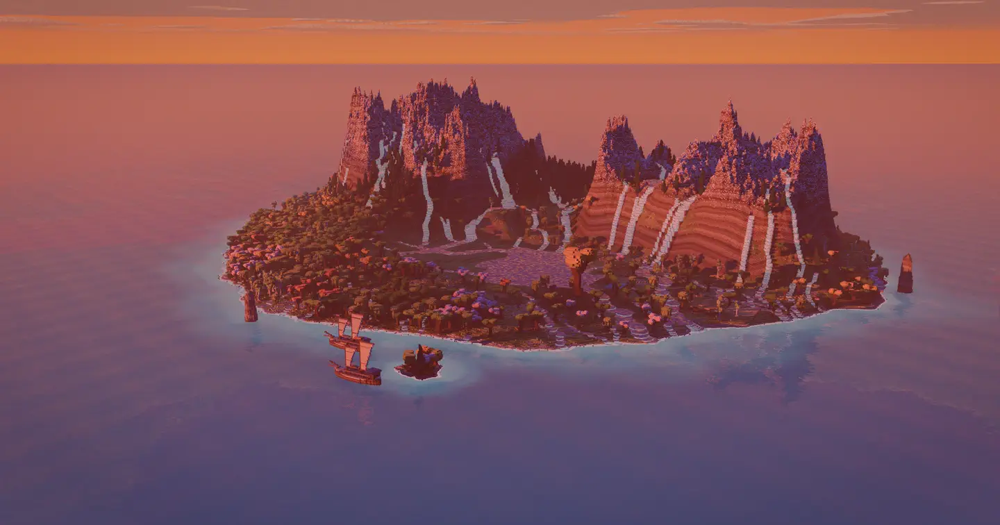
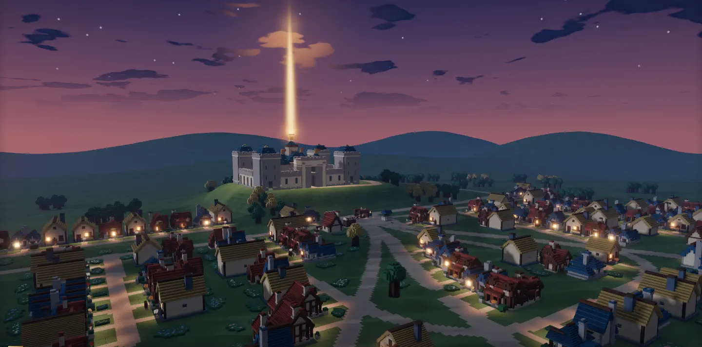
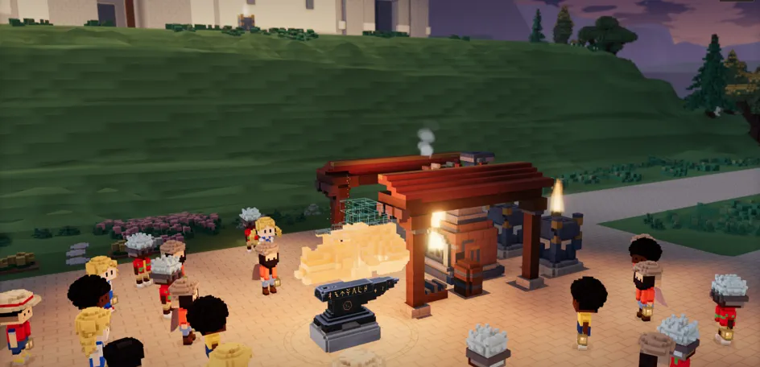
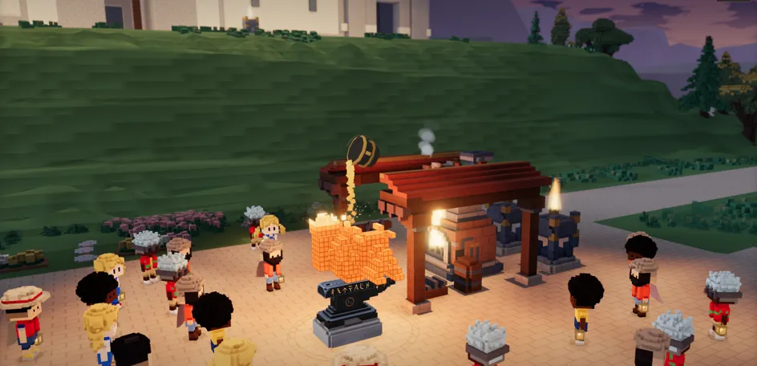
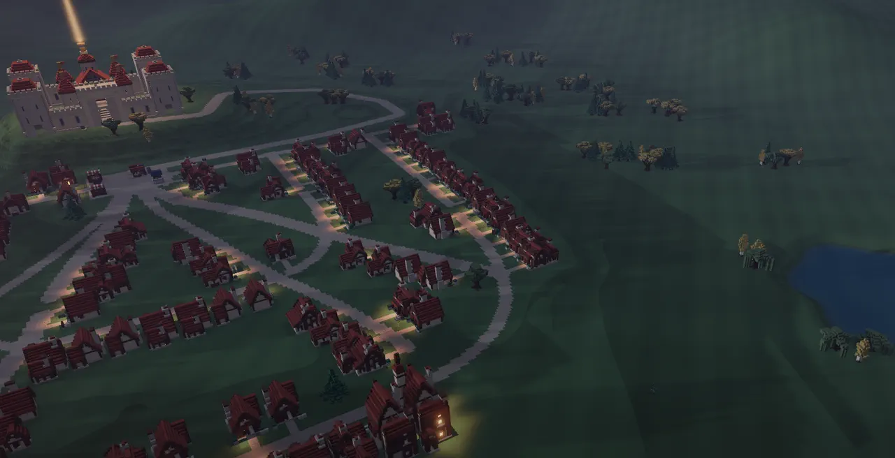
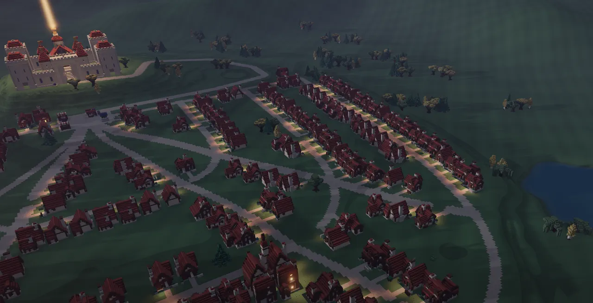
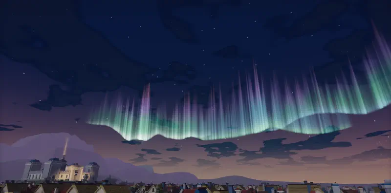
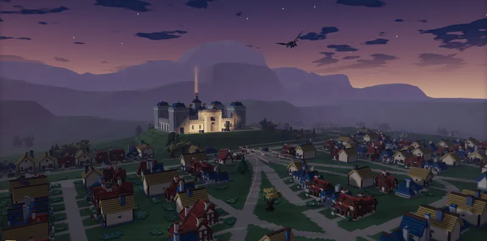
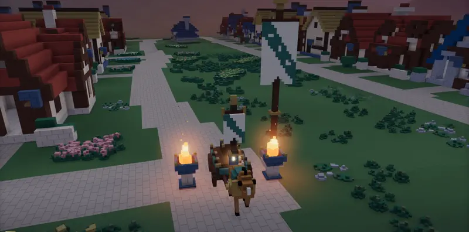
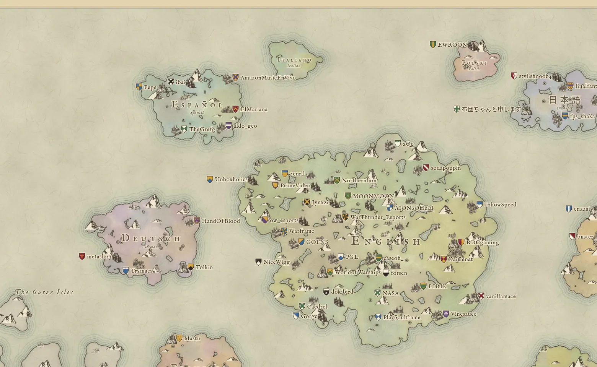

The land of tobi4s_ at dusk · drawn 1 Nov 20262 Nov 2026

Every light is someone in chat.
Say a word, and your window lights up.
Willowmere · drawn 31 Oct 2026
Words become things.
Type !forge and a wish. The Forge makes it for your home.


A hamlet grows into a city.
It grows as your chat keeps coming back.


Willowmere as it grows · drawn 1 Nov 2026
Cheers, hype trains and raids happen here.



Willowmere · drawn 1 Nov 2026

Every Twitch channel is on the map.
Explore the mapThe Atlas · drawn 1 Nov 2026